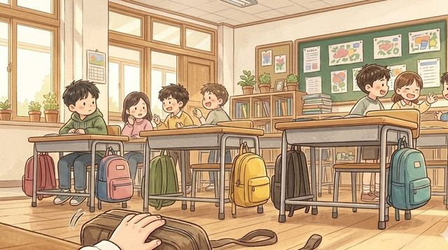
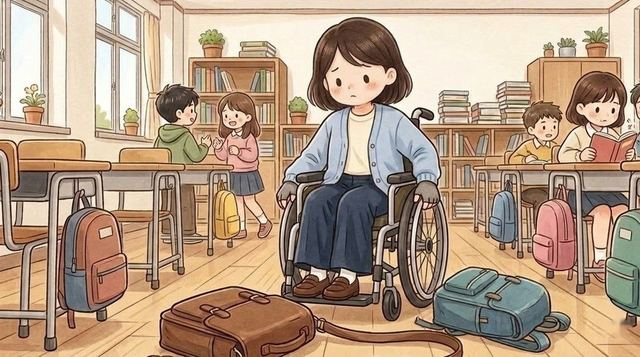
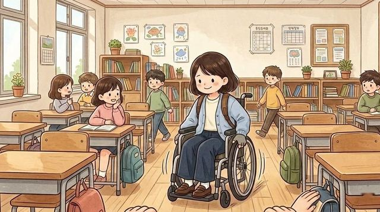
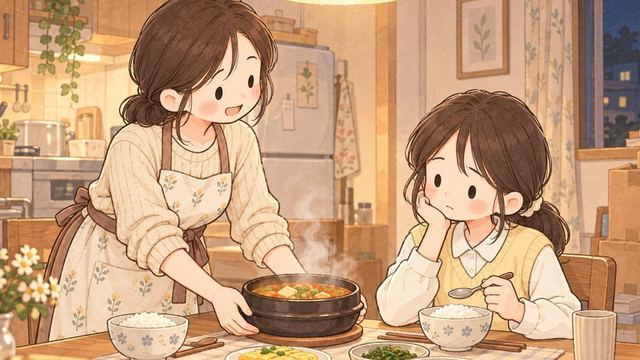
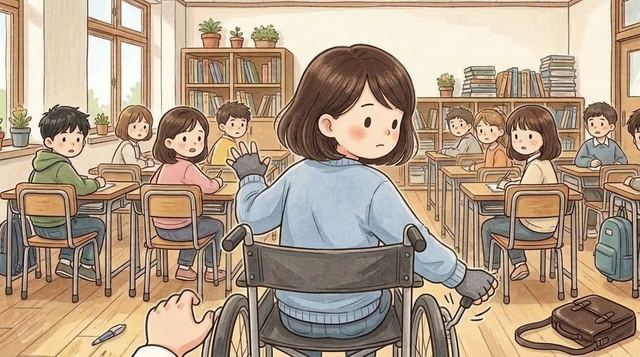
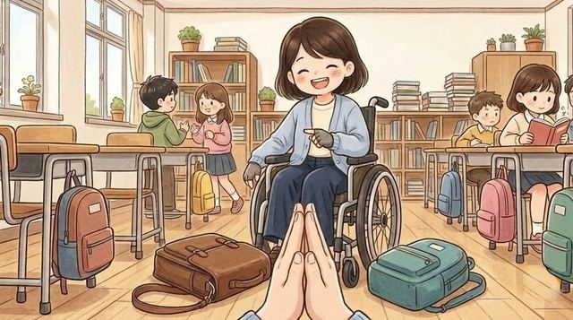

혜은 · 만남 1 (2일차) — 길 막지 마 class

maps/class.jpg
나레이션쉬는 시간. 교실 뒤쪽이 시끄러웠다. 아이들이 가방을 책상 옆 바닥에 내려놓고 떠들고 있었다.

나레이션나도 가방을 의자 옆 바닥에 내려놓았다. 책상 옆 고리에 거는 걸 깜빡했다.
주인공(속마음)surprised(첫날 자기소개 할 때 「천천히 해도 돼」 해 준 애가 있었는데. 누구였지?)
나레이션그때 뒤에서 목소리가 들렸다.
혜은smile길 막지 마~
나레이션돌아보니 혜은이가 휠체어에 앉아 있었다. 손가락 끝이 뚫린 장갑을 끼고, 두 손으로 바퀴를 잡고 있었다.
주인공(속마음)surprised(아, 이 목소리. 첫날 「천천히 해도 돼」 한 애다.)
혜은laugh……농담이야. 반은.
주인공(속마음)surprised(반은 농담? 그럼 반은 진짜라는 거야?)
나레이션혜은이가 턱으로 바닥을 가리켰다. 휠체어 앞, 작은 앞바퀴 바로 앞에 내 가방끈이 늘어져 있었다.
혜은smile농담은 ‘길 막지 마’의 ‘마~’ 부분. 가방은 진짜 치워 줘.
maps/class.jpg
🔎 미션: 「가방」 들어 올리기 (bag)
나레이션내 가방은 들었다. 그런데 통로에는 가방이 두 개 더 있었다. 주인들은 교실 앞쪽에서 떠들고 있었다.
혜은smile앞바퀴가 작아서 끈 같은 데 잘 걸려. 걸리면 내가 앞으로 쏠려.
나레이션혜은이는 담담하게 말했다. 날씨 얘기를 하는 것 같았다.
나레이션혜은이 자리는 맨 뒤, 통로 끝이었다. 거기까지 가려면 이 통로를 지나야 했다.
주인공(속마음)surprised(종 치기 전에 자리에 가야 할 텐데.)
주인공(속마음)surprised(뒤에서 밀어 주면 금방 갈 것 같은데. 아니면 가방을 다 치워야 하나?)

❓ 어떻게 할까?
▶ 선택 A: 「도와줄까?」 하고 묻는다.
maps/class.jpg
주인공smile도와줄까?
나레이션혜은이가 나를 위아래로 한 번 봤다.
혜은smile음…… 응. 저 가방 두 개만 책상 밑으로 넣어 줘.
주인공surprised그게 다야?
혜은smile그게 다야. 나머진 내가 알아서 해.

나레이션나는 가방 두 개를 각자 책상 밑으로 밀어 넣었다. 혜은이가 바퀴를 굴려 통로를 지나갔다. 아주 빨랐다.
혜은laugh오늘 이 길, 별 넷.
주인공surprised별?
혜은smile길 점수. 다섯 개가 제일 좋은 거.
maps/class.jpg
나레이션혜은이가 자리에 도착했다. 그런데 바로 멈췄다.
혜은surprised어? 앞바퀴 앞에 뭐 있다.
나레이션혜은이 앞바퀴 앞에 작은 지우개 하나가 있었다. 내 거였다. 가방을 들 때 떨어진 모양이었다.
maps/class.jpg
🔎 미션: 「지우개」 줍기 (eraser)
나레이션혜은이 앞바퀴 앞에 있던 내 지우개를 주웠다.
혜은laugh오늘 너 두 번 막았다. 길 막지 마~
혜은smile……이번엔 진짜 농담이야.
나레이션종이 울리기 직전, 혜은이가 덧붙였다.
혜은smile아, 그리고. 첫날 자기소개 잘했어.
주인공sad……잘 못 했는데. 말이 막혔어.
혜은smile끝까지 했잖아. 그럼 잘한 거야.
🍚 그날 저녁 (선택 A)

주인공smile엄마, 오늘 혜은이가 ‘길 막지 마~’ 그랬어. 내 가방이 휠체어 앞에 있었거든. 근데 절반은 농담이래.
엄마smile농담으로 말해 주면 듣는 사람이 덜 미안하잖아. 혜은이가 네 마음 편하라고 그랬나 보다.
주인공smile도와줄까 물어봤더니, 가방 두 개만 치워 달래. 나머진 자기가 한대.
엄마smile먼저 물어본 건 잘했네. 도와줄 때는 혜은이가 부탁한 만큼만 해 주면 돼.
주인공smile그리고 엄마, 첫날 ‘천천히 해도 돼’ 해 준 애가 혜은이야. 오늘은 내 자기소개 잘했대.
엄마relieved……좋은 친구를 만났네.
▶ 선택 B: 휠체어 뒤 손잡이를 잡고 가방 사이로 밀어 준다.

주인공smile내가 밀어 줄게!
나레이션나는 휠체어 뒤 손잡이를 잡고 앞으로 밀었다. 덜컹. 앞바퀴가 가방 끈에 걸려 멈췄다. 혜은이 몸이 앞으로 쏠렸다.
혜은surprised잠깐! 잠깐!
나레이션혜은이가 바퀴 옆 손잡이를 내렸다. 딸깍.
혜은angry……손잡이 잡기 전에 말해 줘. 갑자기 움직이면 나 앞으로 쏠려.
주인공surprised아, 미안!
나레이션나는 얼른 손을 뗐다. 혜은이가 숨을 한 번 쉬었다.
혜은sad놀랐잖아. ……괜찮아. 다친 데는 없어. 대신 저 가방이나 치워 줘.
주인공(속마음)sad(도와주려고 한 건데. 손이 먼저 나갔어.)
maps/class.jpg
나레이션혜은이가 자리에 도착했다. 그런데 바로 멈췄다.
혜은surprised어? 앞바퀴 앞에 뭐 있다.
나레이션혜은이 앞바퀴 앞에 작은 지우개 하나가 있었다. 내 거였다. 가방을 들 때 떨어진 모양이었다.
maps/class.jpg
🔎 미션: 「지우개」 줍기 (eraser)
나레이션혜은이 앞바퀴 앞에 있던 내 지우개를 주웠다.
혜은laugh오늘 너 두 번 막았다. 길 막지 마~
혜은smile……이번엔 진짜 농담이야.
나레이션종이 울리기 직전, 혜은이가 덧붙였다.
혜은smile아, 그리고. 첫날 자기소개 잘했어.
주인공sad……잘 못 했는데. 말이 막혔어.
혜은smile끝까지 했잖아. 그럼 잘한 거야.
🍚 그날 저녁 (선택 B)
주인공smile엄마, 오늘 혜은이가 ‘길 막지 마~’ 그랬어. 내 가방이 휠체어 앞에 있었거든. 근데 절반은 농담이래.
엄마smile농담으로 말해 주면 듣는 사람이 덜 미안하잖아. 혜은이가 네 마음 편하라고 그랬나 보다.
주인공sad휠체어를 밀어 줬는데, 앞바퀴가 가방 끈에 걸려서 혜은이가 앞으로 쏠렸어. 손잡이 잡기 전에 말해 달래.
엄마smile혜은이가 많이 놀랐겠다. 휠체어 손잡이를 잡기 전에는 꼭 먼저 물어보자.
주인공smile그리고 엄마, 첫날 ‘천천히 해도 돼’ 해 준 애가 혜은이야. 오늘은 내 자기소개 잘했대.
엄마relieved……좋은 친구를 만났네.
▶ 선택 C: 아무 말 없이, 통로에 있는 가방들을 책상 밑으로 넣는다.
나레이션나는 남은 가방 두 개를 들어 각자 책상 밑으로 밀어 넣었다.
지훈angry야, 내 가방 왜 건드려!
주인공smile통로에 있어서. 네 책상 밑에 넣었어.
지훈surprised……아. 그래.
나레이션통로가 비었다. 혜은이가 바퀴를 굴려 쭉 지나갔다. 아주 빨랐다.
혜은laugh오. 말 안 해도 알아들었네. 오늘 이 길, 별 다섯.
주인공surprised별?
혜은smile길 점수. 다섯 개가 제일 좋은 거.
maps/class.jpg
나레이션혜은이가 자리에 도착했다. 그런데 바로 멈췄다.
혜은surprised어? 앞바퀴 앞에 뭐 있다.
나레이션혜은이 앞바퀴 앞에 작은 지우개 하나가 있었다. 내 거였다. 가방을 들 때 떨어진 모양이었다.
maps/class.jpg
🔎 미션: 「지우개」 줍기 (eraser)
나레이션혜은이 앞바퀴 앞에 있던 내 지우개를 주웠다.
혜은laugh오늘 너 두 번 막았다. 길 막지 마~
혜은smile……이번엔 진짜 농담이야.
나레이션종이 울리기 직전, 혜은이가 덧붙였다.
혜은smile아, 그리고. 첫날 자기소개 잘했어.
주인공sad……잘 못 했는데. 말이 막혔어.
혜은smile끝까지 했잖아. 그럼 잘한 거야.
🍚 그날 저녁 (선택 C)
주인공smile엄마, 오늘 혜은이가 ‘길 막지 마~’ 그랬어. 내 가방이 휠체어 앞에 있었거든. 근데 절반은 농담이래.
엄마smile농담으로 말해 주면 듣는 사람이 덜 미안하잖아. 혜은이가 네 마음 편하라고 그랬나 보다.
주인공smile통로에 있던 가방을 다 책상 밑에 넣었더니 지훈이가 놀랐어. 혜은이는 ‘별 다섯’이래.
엄마smile말없이 가방을 치우면 친구들이 놀랄 수 있어. 다음엔 ‘이거 옮겨도 돼?’ 하고 물어보고 치우자.
주인공smile그리고 엄마, 첫날 ‘천천히 해도 돼’ 해 준 애가 혜은이야. 오늘은 내 자기소개 잘했대.
엄마relieved……좋은 친구를 만났네.
▶ 선택 D: 「미안해, 미안해! 많이 불편했지?」 하고 계속 사과한다.
maps/class.jpg
주인공sad미안해! 진짜 미안해. 많이 불편했지? 미안해.

나레이션혜은이가 눈을 가늘게 떴다.
혜은smile한 번이면 돼. 세 번 하면 내가 엄청 불편한 사람 같잖아.
주인공sad아…… 미안.
혜은laugh그게 네 번째. 농담이야.
나레이션혜은이가 웃었다. 그리고 통로를 가리켰다.
혜은smile사과 말고 저 가방 두 개. 그거면 돼.
나레이션나는 가방을 치웠다. 얼굴이 좀 뜨거웠다.
주인공(속마음)sad(미안한 얼굴을 너무 많이 했나 봐.)
maps/class.jpg
나레이션혜은이가 자리에 도착했다. 그런데 바로 멈췄다.
혜은surprised어? 앞바퀴 앞에 뭐 있다.
나레이션혜은이 앞바퀴 앞에 작은 지우개 하나가 있었다. 내 거였다. 가방을 들 때 떨어진 모양이었다.
maps/class.jpg
🔎 미션: 「지우개」 줍기 (eraser)
나레이션혜은이 앞바퀴 앞에 있던 내 지우개를 주웠다.
혜은laugh오늘 너 두 번 막았다. 길 막지 마~
혜은smile……이번엔 진짜 농담이야.
나레이션종이 울리기 직전, 혜은이가 덧붙였다.
혜은smile아, 그리고. 첫날 자기소개 잘했어.
주인공sad……잘 못 했는데. 말이 막혔어.
혜은smile끝까지 했잖아. 그럼 잘한 거야.
🍚 그날 저녁 (선택 D)
주인공smile엄마, 오늘 혜은이가 ‘길 막지 마~’ 그랬어. 내 가방이 휠체어 앞에 있었거든. 근데 절반은 농담이래.
엄마smile농담으로 말해 주면 듣는 사람이 덜 미안하잖아. 혜은이가 네 마음 편하라고 그랬나 보다.
주인공sad미안하다고 세 번 했더니 혜은이가 한 번이면 된대. 가방만 치우면 됐는데.
엄마smile미안하다는 말은 한 번이면 돼. 그다음엔 가방을 치우면 되는 거야.
주인공smile그리고 엄마, 첫날 ‘천천히 해도 돼’ 해 준 애가 혜은이야. 오늘은 내 자기소개 잘했대.
엄마relieved……좋은 친구를 만났네.